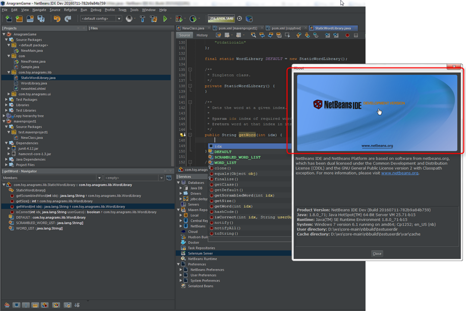
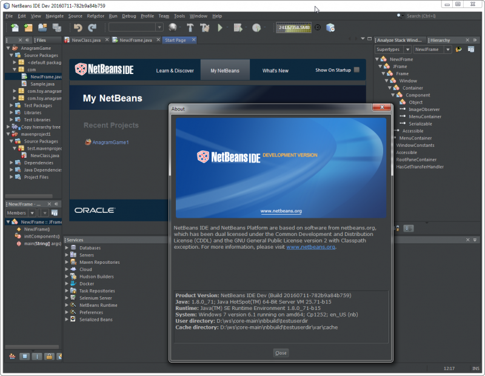
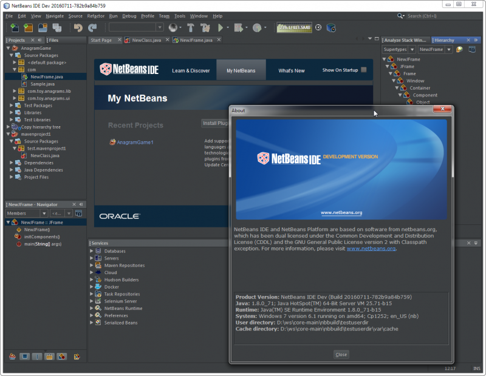

Apache NetBeans
Apache NetBeansHow to provide non-inverted images for dark LookAndFeels like DarkMetal/Darcula?
Note: These pages are being reviewed.
In short
-
All images will be inverted, when using a DarkLaF with an image filter applied and ImageUtilities is used
-
If you don’t like the inverted image/icon, then provide a image using "_dark" in its name. It will be used without any filter applied.
Details
LaFs like DarkMetal/Darcula "invert" the colors of all the images/icons via an image filter set like UIManager.put("nb.imageicon.filter", new DarkIconFilter())
This filter is used when loading images/icons via
org.openide.util.ImageUtilities#loadImageIcon and org.openide.util.ImageUtilities#loadImage.
You do not like the inverted colors? Provide your own images!
But there are cases, you don’t want to get your image inverted.
For example in the following screenshot you do not want the NB logo in the about dialog to be inverted! 
In this case provide an image with a specific name scheme. Add “_dark” to the name. This image is taken as it is and no filter will be applied.
Scheme:
-
about.png→about_dark.png -
But be aware of brandings! Then it must be
about_dark_BRANDING.png
It still does not work? Migrate from ImageIcon…
Check that your code really loads the images via org.openide.util.ImageUtilities#loadImageIcon and org.openide.util.ImageUtilities#loadImage!
Dialogs built using the Mantisse GUI Builder often use new javax.swing.ImageIcon constructs.
So here some replacements patterns to migrate such dialogs.
// within *.java
new javax\.swing\.ImageIcon\(getClass\(\)\.getResource\("(.+?)"\)\)
// with
org.openide.util.ImageUtilities.loadImageIcon\("$1", false\)
// within *.form
<Property name="icon" type="javax.swing.Icon" editor="org.netbeans.modules.form.editors2.IconEditor">
// with
<Property name="icon" type="javax.swing.Icon" editor="org.netbeans.modules.form.RADConnectionPropertyEditor">
// within *.form
<Image iconType="3" name="(.*?)"/>
with
<Connection code="org.openide.util.ImageUtilities.loadImageIcon\(&amp;quot;$1&amp;quot;, false\)" type="code"/>Examples
Without Invert:

With Invert enabled and *_dark.png for the logo and startpage images:

Related issues
Handling Branding
Platform applications using Dark Look And Feels require the following for branding-related image adjustments (as discussed in http://forums.netbeans.org/topic66964.html):
-
For frame images, the images must be named using the _dark suffix (frame_dark.gif, frame32_dark.gif, and frame48_dark.gif).
-
For splash images, both a dark and non-dark version are required (splash.gif, splash_dark.gif).
These images are typically found in the branding/core/core.jar/org/netbeans/core/startup folder for the application.
As of Netbeans 8.2, the Branding dialog within the Netbeans IDE is not designed for these dark theme image requirements. Users using a dark theme will want to make image name changes directly within the filesystem to meet these requirements.